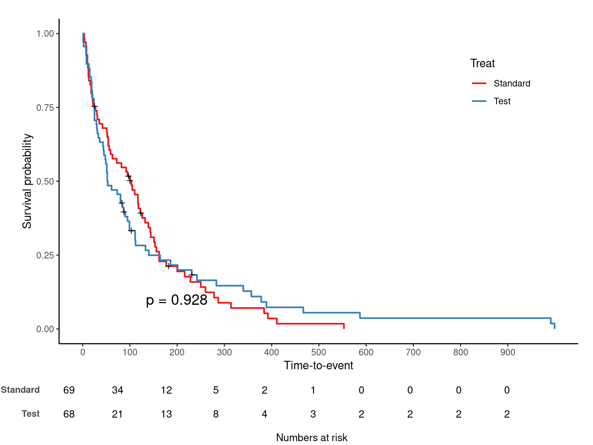
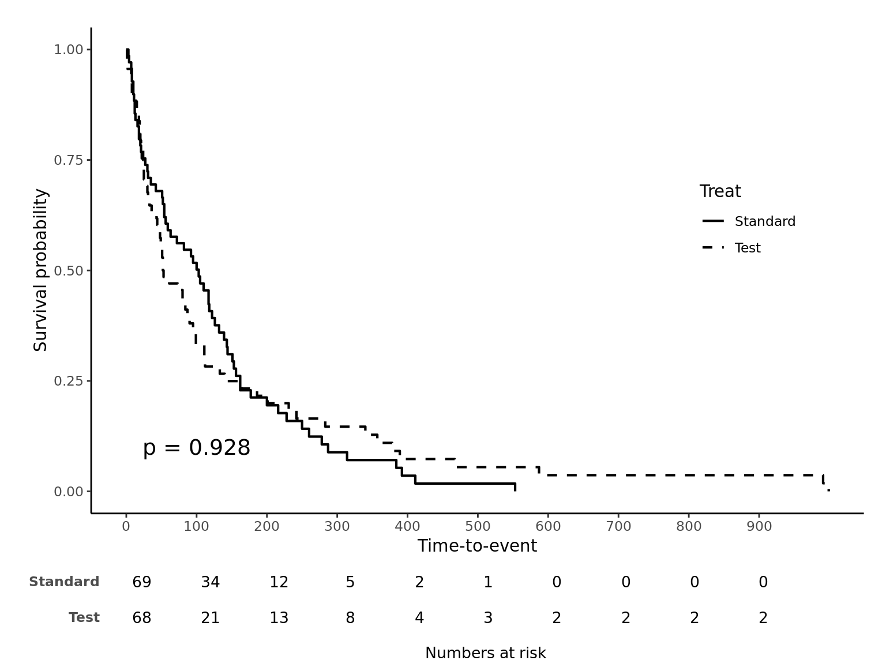
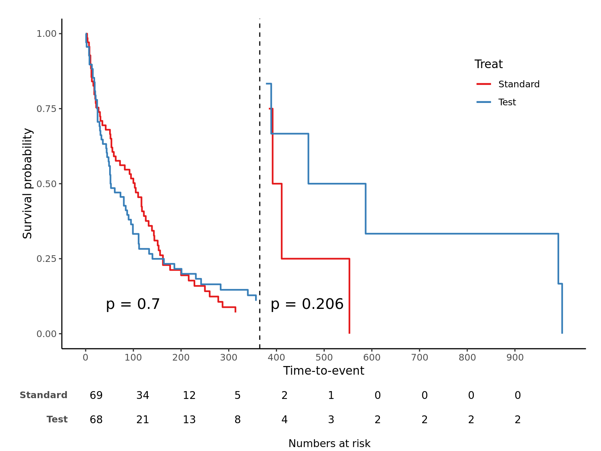
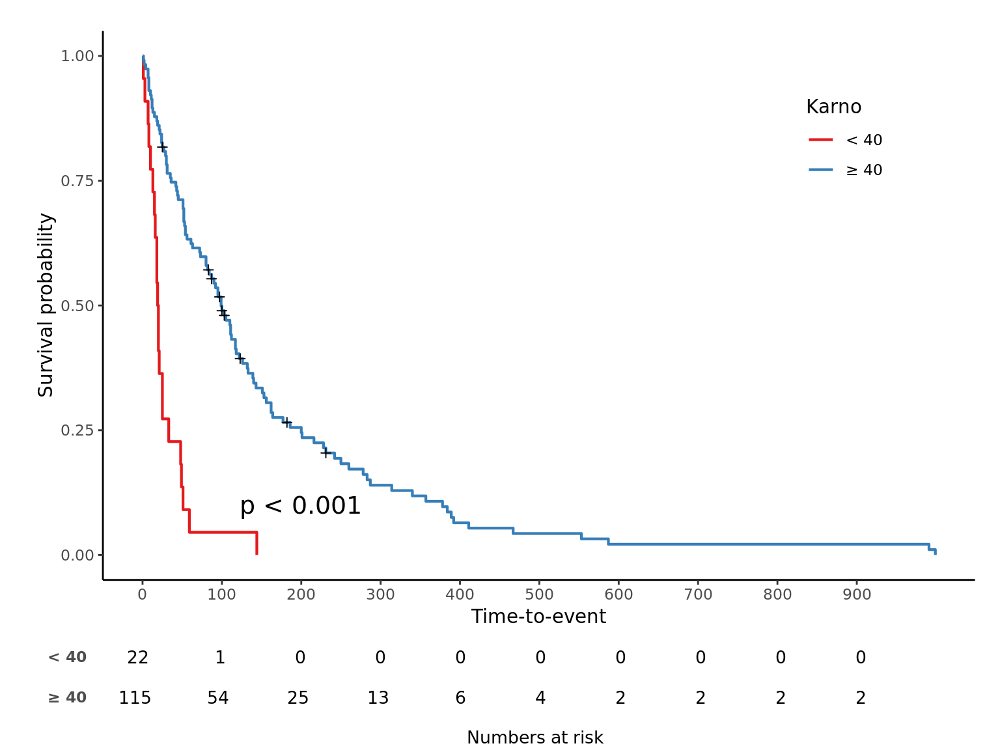
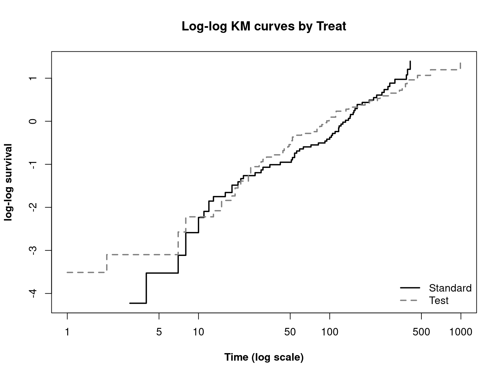
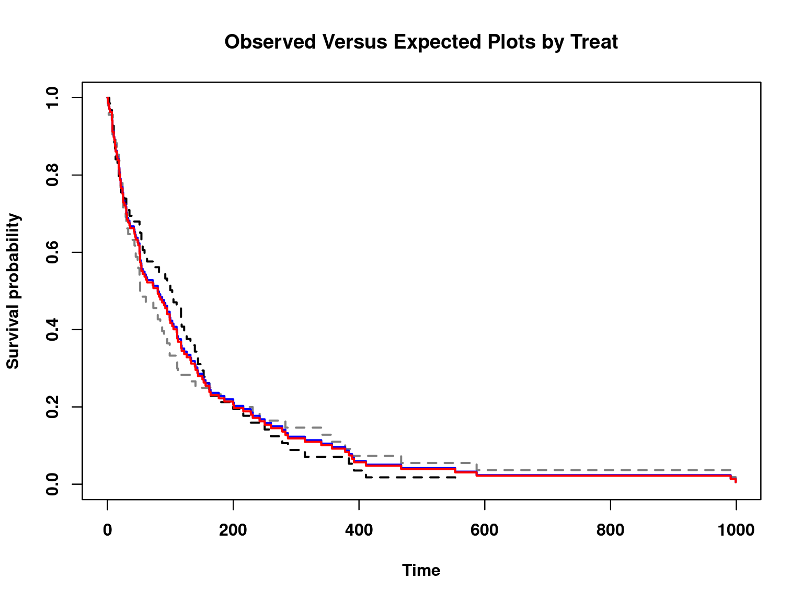
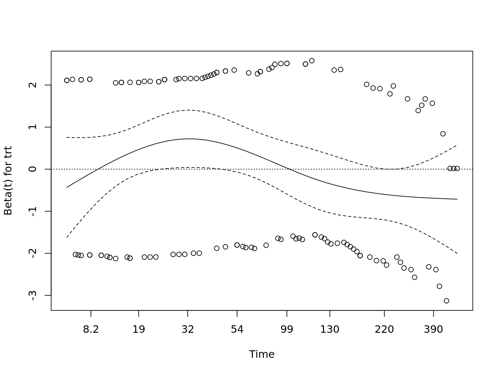
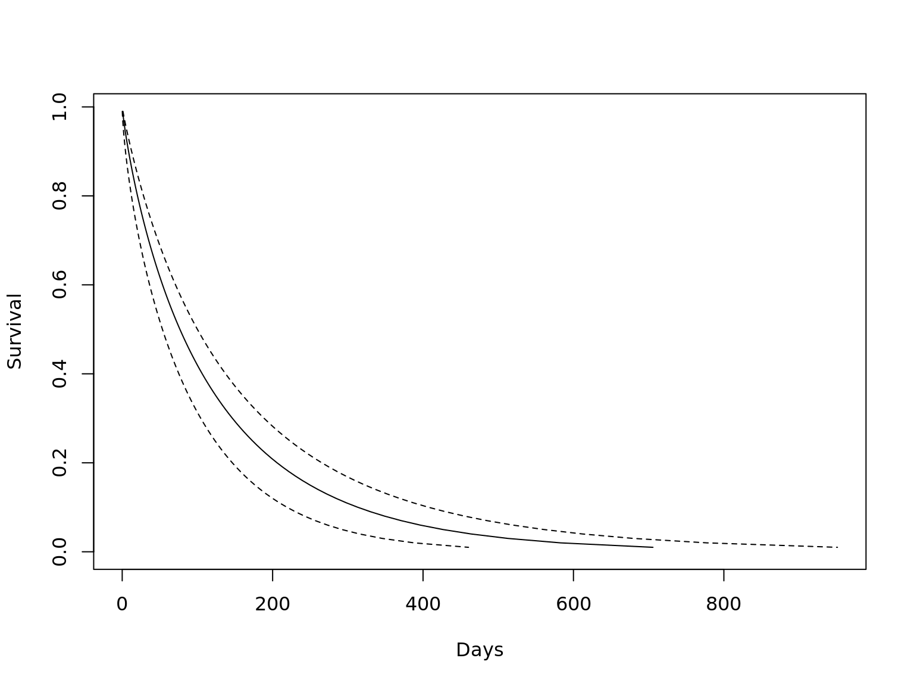

Table of Contents
김진섭 대표는 성균관의대 사회의학교실 김종헌 교수님 수업에 참가, Kaplan-meier curve, 비례위험가정 및 모형적합도, Time-dependent covariate 그리고 모수적 생존분석을 중심으로 R 코드를 실습할 예정입니다.
요약
자체 개발한 jskm 패키지로 kaplan-meier 그림을 그린다.
Log-log plot, Observed-expected plot 으로 비례위험가정을 확인 후,
cox.zph함수로 p-value 를 구한다.anova로 여러 모형의 log-likelohood 를 비교하고,step으로 AIC 기반 최적모형을 고를 수 있다.Time-dependent analysis 는 (1) 비례위험가정이 깨졌을 때, (2) 반복측정 공변량이 있을 때 수행한다.
모수적 생존분석은 생존함수 \(S(t)\) 를 구할 수 있어 예측모형을 만들 수 있다.
Kaplan-meier plot
Kaplan-meier plot 은 R 기본 plot에서도 제공하지만, survminer 패키지의 ggsurvplot 함수에서 다양한 옵션을 제공한다. 본 실습에서는 본사가 개발한 jskm 패키지의 jskm 함수를 survival 패키지 내장 데이터 veteran 에 적용하겠다. 우선 패키지를 불러온 후 survfit 으로 구간별 생존율을 구하자.
library(DT);library(survival);library(jskm)
datatable(veteran, rownames = F, caption = "Example data", options = list(scrollX = T))
sfit <- survfit(Surv(time, status) ~ trt, data = veteran)
summary(sfit, times = c(100, 200, 300, 365), extend = T)
Call: survfit(formula = Surv(time, status) ~ trt, data = veteran)
trt=1
time n.risk n.event survival std.err lower 95% CI upper 95% CI
100 34 34 0.5020 0.0606 0.3962 0.636
200 12 19 0.1947 0.0501 0.1176 0.322
300 5 6 0.0885 0.0371 0.0390 0.201
365 4 1 0.0708 0.0336 0.0279 0.180
trt=2
time n.risk n.event survival std.err lower 95% CI upper 95% CI
100 21 45 0.333 0.0578 0.2367 0.467
200 13 7 0.216 0.0517 0.1354 0.345
300 8 4 0.146 0.0454 0.0797 0.269
365 6 2 0.110 0.0407 0.0530 0.227trt 1 은 “Standard”, 2 는 “Test” 이며 jskm 을 적용하면 아래와 같다.
jskm(sfit)
라벨을 수정하고, risk table 과 log-rank p-value 를 추가하자.
jskm(sfit, ystrataname = "Treat", ystratalabs = c("Standard", "Test"), table = T, pval = T)
십자가 무늬는 실제 censoring 이 발생한 부분이며 mark = F 로 숨길 수 있다. 생존율이 아닌 누적발생률을 %로 보는 코드는 아래와 같다.
jskm(sfit, ystrataname = "Treat", ystratalabs = c("Standard", "Test"), table = T, pval = T,
marks = F, cumhaz = T, surv.scale = "percent" )
p-value 위치는 pval.coord legend 위치는 legendposition 옵션을 이용한다. 선을 흑백으로 바꾸려면 linecols = "black" 을 추가한다. legendposition 은 x,y 값 모두 0~1 scale 임을 주의하자.
jskm(sfit, ystrataname = "Treat", ystratalabs = c("Standard", "Test"), table = T, pval = T,
marks = F, pval.coord = c(100, 0.1), legendposition = c(0.85, 0.6), linecols = "black")
마지막으로 특정 시간을 기준으로 나누어보는 landmark analysis 옵션을 소개한다.
jskm(sfit, ystrataname = "Treat", ystratalabs = c("Standard", "Test"), table = T, pval = T,
marks = F, cut.landmark = 365)
연속변수의 최적 cut-off 구하기
maxstat 패키지를 이용한다.
library(maxstat)
mtest <- maxstat.test(Surv(time, status) ~ karno, data = veteran, smethod = "LogRank")
mtest
Maximally selected LogRank statistics using none
data: Surv(time, status) by karno
M = 4.6181, p-value = NA
sample estimates:
estimated cutpoint
40
cut <- mtest$estimate
veteran$karno_cat <- factor(as.integer(veteran$karno >= cut))
sfit2 <- survfit(Surv(time, status) ~ karno_cat, data = veteran)
jskm(sfit2, ystrataname = "Karno", ystratalabs = paste(c("<", "≥"), cut), table = T, pval = T)
비례위험가정 확인
Logrank test, Cox model 로 추정할 때 비례위험을 가정하므로 이것이 깨지면 큰일이다. 본 글에서는 비례위험가정을 확인하는 그림 2개와 테스트를 소개한다. 자세한 내용은 https://3months.tistory.com/357?category=743476 를 참고하기 바란다.
Log-log plot
\(\log(t)\) 와 \(\log(-\log(S(t)))\) 관계를 그림으로 보는 방법이다. 왜 로그를 이용하는지는 모수적 생존분석에서 이야기하겠다.
plot(sfit, fun="cloglog", lty=1:2, col=c("Black", "Grey50"), lwd=2, font.lab=2, main="Log-log KM curves by Treat",
ylab="log-log survival", xlab="Time (log scale)")
legend("bottomright",lty=1:2,legend=c("Standard", "Test"), bty="n", lwd=2, col=c("Black", "Grey50"))
두 선이 평행한지 확인하면 되고 직선인지 곡선인지는 상관없다. 모수적 생존분석에서 다룰 weibull 모형에서는 직선인지도 확인해야 한다.
Observed-expected plot
비례위험을 가정하는 cox model 예상과 비교하는 방법이다.
plot(sfit, lty="dashed", col=c("Black", "Grey50"), lwd=2, font=2, font.lab=2, main="Observed Versus Expected Plots by Treat",
ylab="Survival probability", xlab="Time")
par(new = T)
#expected
exp <- coxph(Surv(time, status) ~ trt, data = veteran)
new_df <- data.frame(trt = c(1, 2))
kmfit.exp <- survfit(exp, newdata = new_df)
plot(kmfit.exp, lty = "solid", col=c("Blue", "Red"), lwd=2, font.lab=2)
Goodness of fit
cox.zph 함수로 통계검정을 수행한다.
cox.zph(exp)
chisq df p
trt 3.54 1 0.06
GLOBAL 3.54 1 0.06
plot(cox.zph(exp), var = "trt")
abline(h = 0, lty = 3)
선이 시간 상관없이 일정할수록, 즉 x축과 평행할수록 비례위험가정을 만족한다고 판단한다. 위 그림은 x축과 평행은 아니지만 경향성이 있다고 볼수도 없는 애매한 느낌이며 p 는 0.06 이다.
모형 비교
Cox 모형에서 얻은 log-likelihood 값으로 여러 모형을 비교할 수 있다. 모형들은 n수가 전부 동일 해야 비교 가능하므로, 에러 나올땐 먼저 결측치를 확인하자.
exp$loglik
[1] -505.4491 -505.4442
exp2 <- coxph(Surv(time, status) ~ trt + age, data = veteran)
exp3 <- coxph(Surv(time, status) ~ trt + age + celltype, data = veteran)
anova(exp, exp2, exp3)
Analysis of Deviance Table
Cox model: response is Surv(time, status)
Model 1: ~ trt
Model 2: ~ trt + age
Model 3: ~ trt + age + celltype
loglik Chisq Df P(>|Chi|)
1 -505.44
2 -505.14 0.6162 1 0.4325
3 -492.43 25.4161 3 1.264e-05 ***
---
Signif. codes: 0 '***' 0.001 '**' 0.01 '*' 0.05 '.' 0.1 ' ' 1step 함수를 이용, AIC 기반 최적 모형을 고를 수 있다. scope 옵션으로 빠지면 안 될 변수를 미리 정한다.
step(exp3, scope = list(lower = ~ 1))
Start: AIC=994.86
Surv(time, status) ~ trt + age + celltype
Df AIC
- age 1 993.04
- trt 1 993.65
<none> 994.86
- celltype 3 1014.27
Step: AIC=993.04
Surv(time, status) ~ trt + celltype
Df AIC
- trt 1 992.05
<none> 993.04
- celltype 3 1012.89
Step: AIC=992.05
Surv(time, status) ~ celltype
Df AIC
<none> 992.05
- celltype 3 1010.90
Call:
coxph(formula = Surv(time, status) ~ celltype, data = veteran)
coef exp(coef) se(coef) z p
celltypesmallcell 1.0013 2.7217 0.2535 3.950 7.83e-05
celltypeadeno 1.1477 3.1510 0.2929 3.919 8.90e-05
celltypelarge 0.2301 1.2588 0.2773 0.830 0.407
Likelihood ratio test=24.85 on 3 df, p=1.661e-05
n= 137, number of events= 128 Time-dependent analysis
자세한 내용은 https://cran.r-project.org/web/packages/survival/vignettes/timedep.pdf 를 참고하기 바란다.
비례위험가정 깨졌을 때 (time-dependent coefficients)
어떤 공변량이 비례위험가정을 만족하지 않을 경우, 먼저 survSplit 으로 time 을 쪼개 몇 개의 그룹으로 나눈다.
vet2 <- survSplit(Surv(time, status) ~ ., data = veteran, cut=c(90, 180), episode = "tgroup", id = "id")
datatable(vet2, rownames = F, caption = "Time split data", options = list(scrollX = T))이제 공변량의 계수를 시간그룹 별로 따로 구한다.
vfit2 <- coxph(Surv(tstart, time, status) ~ trt + prior + karno:strata(tgroup), data=vet2)
summary(vfit2)
Call:
coxph(formula = Surv(tstart, time, status) ~ trt + prior + karno:strata(tgroup),
data = vet2)
n= 225, number of events= 128
coef exp(coef) se(coef) z
trt -0.011025 0.989035 0.189062 -0.058
prior -0.006107 0.993912 0.020355 -0.300
karno:strata(tgroup)tgroup=1 -0.048755 0.952414 0.006222 -7.836
karno:strata(tgroup)tgroup=2 0.008050 1.008083 0.012823 0.628
karno:strata(tgroup)tgroup=3 -0.008349 0.991686 0.014620 -0.571
Pr(>|z|)
trt 0.953
prior 0.764
karno:strata(tgroup)tgroup=1 4.64e-15 ***
karno:strata(tgroup)tgroup=2 0.530
karno:strata(tgroup)tgroup=3 0.568
---
Signif. codes: 0 '***' 0.001 '**' 0.01 '*' 0.05 '.' 0.1 ' ' 1
exp(coef) exp(-coef) lower .95 upper .95
trt 0.9890 1.011 0.6828 1.4327
prior 0.9939 1.006 0.9550 1.0344
karno:strata(tgroup)tgroup=1 0.9524 1.050 0.9409 0.9641
karno:strata(tgroup)tgroup=2 1.0081 0.992 0.9831 1.0337
karno:strata(tgroup)tgroup=3 0.9917 1.008 0.9637 1.0205
Concordance= 0.725 (se = 0.024 )
Likelihood ratio test= 63.04 on 5 df, p=3e-12
Wald test = 63.7 on 5 df, p=2e-12
Score (logrank) test = 71.33 on 5 df, p=5e-14반복측정 공변량이 있을 때
https://www.ncbi.nlm.nih.gov/pmc/articles/PMC6015946/pdf/atm-06-07-121.pdf 예제를 이용하였다.
df.tf 는 기본정보가 담긴 데이터, df.td 는 time-dependent covariate 가 담긴 데이터이다. tmerge 함수를 2번 실행하면 두 정보를 합칠 수 있다. 먼저 df.tf 만 이용해서 tstart, tstop 변수를 만들자.
df <- tmerge(df.tf, df.tf, id = id, status1 = event(time, status))
datatable(df, rownames = F, caption = "df: add tstart/tstop", options = list(scrollX = T))tmerge 함수의 첫번째는 baseline data, 둘째는 time-dependent covariate 가 담긴 데이터가 들어가지만, tstart, tstop 를 만들기 위해 모두 df.tf 를 넣었다. status1 이라는 변수를 event(time, status) 로 지정함으로서 tstart, tstop 을 인식할 수 있다. status1 변수 자체는 status 와 동일하다. 이렇게 만든 df 에 time-dependent 정보가 담긴 df.td 를 결합하면 원하는 데이터를 얻을 수 있다. tmerge 의 자세한 내용은 https://ww2.amstat.org/meetings/sdss/2018/onlineprogram/ViewPresentation.cfm?file=304494.pdf 를 참고하기 바란다.
df2 <- tmerge(df, df.td, id = id, crp = tdc(time, crp))
datatable(df2, rownames = F, caption = "df2: final", options = list(scrollX = T))crp 변수를 tdc(time, crp) 로 만들었다. 이제 cox model 을 실행할 수 있는데, 반복측정정보를 cluster 옵션에 넣는 것을 잊지 말자.
model.td <- coxph(Surv(tstart, tstop, status) ~ grp + age + crp, data = df2, cluster = id)
summary(model.td)
Call:
coxph(formula = Surv(tstart, tstop, status) ~ grp + age + crp,
data = df2, cluster = id)
n= 376, number of events= 202
coef exp(coef) se(coef) robust se z Pr(>|z|)
grp 0.705546 2.024951 0.150572 0.258605 2.728 0.00637 **
age 0.006765 1.006787 0.004755 0.007727 0.875 0.38136
crp 0.001192 1.001192 0.001630 0.001460 0.816 0.41427
---
Signif. codes: 0 '***' 0.001 '**' 0.01 '*' 0.05 '.' 0.1 ' ' 1
exp(coef) exp(-coef) lower .95 upper .95
grp 2.025 0.4938 1.2198 3.362
age 1.007 0.9933 0.9917 1.022
crp 1.001 0.9988 0.9983 1.004
Concordance= 0.587 (se = 0.032 )
Likelihood ratio test= 26.11 on 3 df, p=9e-06
Wald test = 8.01 on 3 df, p=0.05
Score (logrank) test = 25.6 on 3 df, p=1e-05, Robust = 6.95 p=0.07
(Note: the likelihood ratio and score tests assume independence of
observations within a cluster, the Wald and robust score tests do not).모수적(parametric) 생존분석
Cox model 은 baseline hazard 없이도 HR 을 구할 수 있는 장점이 있다. 아래 식
\[h(t) = h_0(t) \cdot \exp(\sum \beta_i x_i)\]
에서 \(h_0(t)\) 를 몰라도 \(\beta\) 들을 구할 수 있다는 뜻이고, cox model 이 준모수적(semi-parametric) 모형으로 불리는 이유이기도 하다. 그러나 Cox model 로 예측모형을 만들 때 이것은 단점이 된다. \(t\) 년 생존율을 구할 수 없기 때문이다. 생존함수 \(S(t)\) 는 아래처럼 계산하는데
\[S(t) = \int_{0}^{t} h(u) \,du\] baseline hazard 를 모르므로 \(h(t)\) 도 알 수 없고 따라서 \(S(t)\) 도 수식으로 표현할 수 없다. Cox model 로 예측모형을 만든 연구는 (1) 데이터에서 시간 \(t\) 마다 \(S(t)\) 의 값을 직접 구해 이용하거나, (2) 인구집단통계에서 \(S(t)\) 를 얻어온다.
그러면 baseline hazard 가 어떤 형태라고 가정하면 어떨까? 이것이 모수적 생존분석이며 cox model 과 장단점을 비교하면 아래와 같다.
Cox model
– distribution of survival time unkonwn
– Less consistent with theoretical \(S(t)\) (typically step function)
+ Does not rely on distributional assumptions
+ Baseline hazard not necessary for estimation of hazard ratio
Parametric Survival Model
+ Completely specified \(h(t)\) and \(S(t)\)
+ More consistent with theoretical \(S(t)\)
+ time-quantile prediction possible
– Assumption on underlying distribution
아래는 대표적인 분포들이며 본 글에서는 흔히 쓰는 weibull 을 다루려 한다.

아까 비례위험가정 얘기할 때 weibull 모형은 log-log 그래프가 직선인지도 확인해야 한다고 했는데, 그 이유는 아래 식에 나와있듯이 \(\log(-\log(S(t)))\) 와 \(\log(t)\) 가 정비례관계이기 때문이다.
\[ \begin{align} S(t) &= \exp(-\lambda t^p) \\ -\log(S(t)) &= \lambda t^p \\ \log(-\log(S(t))) &= \log(\lambda) + p\log(t) \\ \log(-\log(S(t))) &\propto \log(t) \end{align} \]
\(p\) 를 scale parameter 라 하며 \(p = 1\) 이면 baseline hazard 가 시간에 따라 일정함을 의미하며, 자세한 내용은 https://stat.ethz.ch/education/semesters/ss2011/seminar/contents/handout_9.pdf 를 참고하자. R의 survreg 함수를 이용하며, 결과해석은 cox model 과 동일한데 scale parameter 값이 추가로 나온다(scale parameter를 미리 정할 수도 있다).
model.weibull <- survreg(Surv(time, status) ~ trt, data = veteran)
summary(model.weibull)
Call:
survreg(formula = Surv(time, status) ~ trt, data = veteran)
Value Std. Error z p
(Intercept) 4.7218 0.3275 14.42 <2e-16
trt 0.0478 0.2079 0.23 0.818
Log(scale) 0.1585 0.0673 2.35 0.019
Scale= 1.17
Weibull distribution
Loglik(model)= -748.1 Loglik(intercept only)= -748.1
Chisq= 0.05 on 1 degrees of freedom, p= 0.82
Number of Newton-Raphson Iterations: 5
n= 137 Scale = 1.17 임을 확인할 수 있고, trt 그룹별 \(S(t)\) 를 그려보면 아래와 같다.
pcut <- seq(0.01, 1, by = 0.01) ## 1%-99%
ptime <- predict(model.weibull, newdata = data.frame(trt = 1), type = "quantile", p = pcut, se = T)
matplot(cbind(ptime$fit, ptime$fit + 1.96*ptime$se.fit, ptime$fit - 1.96*ptime$se.fit), 1 - pcut,
xlab = "Days", ylab = "Survival", type = 'l', lty = c(1, 2, 2), col=1)
\(S(t)\) 를 구할 수 없는 cox model 의 그림과 비교해보자.
model.cox <- exp
kmfit.exp <- survfit(exp, newdata = data.frame(trt = 1))
plot(kmfit.exp, lty = c(1, 2, 2), col=1, lwd=2, xlab = "Days", ylab = "Survival")
지금까지 생존분석 때 고려할 내용을 다루었으며 처음의 요약을 반복하면 아래와 같다.
자체 개발한 jskm 패키지로 kaplan-meier 그림을 그린다.
Log-log plot, Observed-expected plot 으로 비례위험가정을 확인 후,
cox.zph함수로 p-value 를 구한다.anova로 여러 모형의 log-likelohood 를 비교하고,step으로 AIC 기반 최적모형을 고를 수 있다.Time-dependent analysis 는 (1) 비례위험가정이 깨졌을 때, (2) 반복측정 공변량이 있을 때 수행한다.
모수적 생존분석은 생존함수 \(S(t)\) 를 구할 수 있어 예측모형을 만들 수 있다.
자세한 내용은 중간중간 링크한 자료들을 참고하기 바란다.